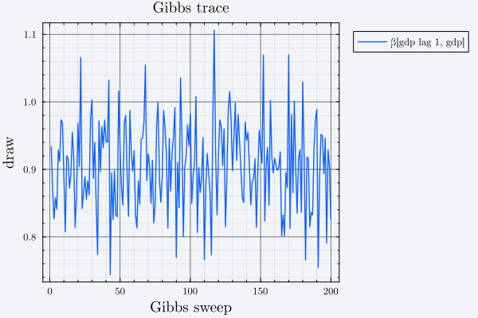
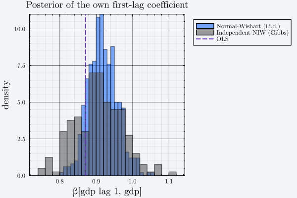

Posterior Sampling: Closed Form and Gibbs
Stage 4b. sample_posterior takes a prior and a VARestimate and returns a BVARdraws. It has six methods, and which sampling mechanism you get depends entirely on the prior type you hand it — the call site looks identical either way.
| Prior type | Mechanism | What ndraws counts |
|---|---|---|
MinnesotaPrior | Closed form, $\Sigma$ plugged in | Independent draws |
NormalWishartPrior | Closed form (Matrix-Normal / Inverse-Wishart) | Independent draws |
AsymmetricConjugatePrior | Closed form, per equation (Normal-Gamma) | Independent draws |
BaumeisterHamiltonPrior | Closed form, per equation (Normal-Gamma) | Independent draws |
IndependentNIWPrior | Gibbs sampler (Turing) | Correlated sweeps |
That distinction matters for how you treat the output: for the four conjugate families the draws are i.i.d. from the exact posterior, so there is no burn-in, no thinning and no convergence question. For IndependentNIWPrior they are an autocorrelated Markov chain.
The closed-form path
prior_nw = build_prior(df, end_vars, est, :normal_wishart)
draws_nw = sample_posterior(prior_nw, est; ndraws = 500)
(family = draws_nw.family, ndraws = length(draws_nw.β), β_size = size(draws_nw.β[1]))(family = :normal_wishart, ndraws = 500, β_size = (7, 3))BVARdraws stores the draws as vectors of matrices rather than a single stacked array:
| Field | Type | Meaning |
|---|---|---|
β | Vector{Matrix{T}} | One k × vars coefficient matrix per draw, same row convention as VARestimate.β_hat |
Σ | Vector{Matrix{T}} | One vars × vars covariance per draw |
family | Symbol | Which prior family produced these draws |
lags, vars, names, include_constant | Carried forward for the structural stage |
Reduce over it with ordinary Julia:
using Statistics
β_mean = sum(draws_nw.β) / length(draws_nw.β)
round.(β_mean, digits = 4)7×3 Matrix{Float64}:
0.8916 -0.0878 1.8295
0.9182 0.0596 0.0202
0.1068 0.8606 -0.0201
-0.1471 0.0245 0.0352
0.0092 0.0199 -0.0011
0.0064 0.0157 -0.0094
0.0116 0.0609 -0.0031Comparing that against the OLS point estimate shows the shrinkage the prior applied:
round.(β_mean .- est.β_hat, digits = 4)7×3 Matrix{Float64}:
-0.0044 0.434 -0.1528
0.0474 0.0816 -0.0095
0.019 0.0675 -0.0324
0.0076 -0.0061 0.0657
-0.0438 -0.0756 0.0027
-0.0249 -0.0767 0.0431
-0.0195 -0.2529 0.0261The Gibbs path
IndependentNIWPrior has no closed-form joint posterior, so sample_posterior runs a Gibbs sampler. Its two conditionals (niw_cond_β and niw_cond_Σ) are exactly the same Matrix-Normal and Inverse-Wishart distributions the conjugate families draw from directly — only alternating between them requires a sampler at all. Marginal-likelihood tuning is unavailable for this family, so hyperparameters must be fixed:
prior_niw = build_prior(
df, end_vars, est, :independent_niw;
hyperparameter_method = :fixed,
hyperparameters = (λ1 = 0.2, λ2 = 0.5, λ3 = 1.0, λ4 = 1e5),
)
draws_niw = sample_posterior(prior_niw, est; ndraws = 200)
(family = draws_niw.family, ndraws = length(draws_niw.β))(family = :independent_niw, ndraws = 200)The likelihood is expressed purely through the Gram blocks $(X'X, X'Y, Y'Y)$ rather than the raw data (niw_var_model), which is what keeps this path consistent with the other five methods and avoids re-collapsing the data on every sweep.
Because these draws are correlated, inspect the trace before trusting a posterior summary:
using Plots
trace_own_lag = [b[2, 1] for b in draws_niw.β] # gdp equation, own first lag
plot(
trace_own_lag;
label = "β[gdp lag 1, gdp]",
xlabel = "Gibbs sweep",
ylabel = "draw",
title = "Gibbs trace",
)
Comparing the two
The posterior for a single coefficient under both priors, on the same data:
own_nw = [b[2, 1] for b in draws_nw.β] # 500 i.i.d. draws
own_niw = [b[2, 1] for b in draws_niw.β] # 200 Gibbs sweeps
# Separate calls, because the two sets deliberately differ in length.
histogram(
own_nw;
label = "Normal-Wishart (i.i.d.)",
xlabel = "β[gdp lag 1, gdp]",
ylabel = "density",
title = "Posterior of the own first-lag coefficient",
alpha = 0.55,
bins = 30,
normalize = :pdf,
)
histogram!(own_niw; label = "Independent NIW (Gibbs)", alpha = 0.55, bins = 30, normalize = :pdf)
vline!([est.β_hat[2, 1]]; label = "OLS", linestyle = :dash, linewidth = 2)
The two need not agree: IndependentNIWPrior can represent cross-equation asymmetry that the Kronecker structure of NormalWishartPrior cannot, which is the whole reason to pay for the Gibbs sampler.